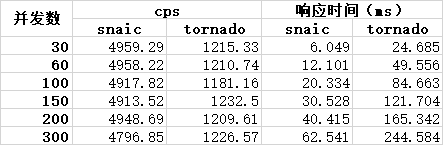
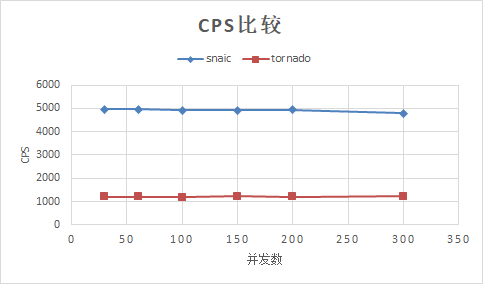
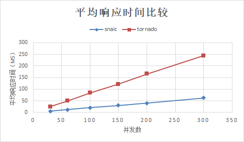

操作系统 ： CentOS7.3.1611_x64
Python 版本 : 3.6.8
tornado版本：6.0.2
snaic版本：19.9.0
CPU ： Intel(R) Core(TM) i5-2320 CPU @ 3.00GHz 4核
之前一直使用tornado作为http相关python程序的框架，最近查资料发现新出的snaic性能很高，这里在同样硬件条件下使用ab进行简单的压测。
安装apache ab工具：
yum -y install httpd-tools压测命令：
ab -c 30 -n 100000 http://127.0.0.1:9093/参数说明：
-c ：模拟并发数
-n : 总请求数
使用tornado实现的简单http服务器代码：
https://github.com/mike-zhang/pyExamples/blob/master/httpRelate/httpServer/tornadoTest1.py
使用snaic实现的简单http服务器代码：
https://github.com/mike-zhang/pyExamples/blob/master/httpRelate/httpServer/snaicTest1.py
tornado测试结果：
Server Software: TornadoServer/6.0.2
Server Hostname: 127.0.0.1
Server Port: 9093
Document Path: /
Document Length: 12 bytes
Concurrency Level: 30
Time taken for tests: 82.282 seconds
Complete requests: 100000
Failed requests: 0
Write errors: 0
Total transferred: 20700000 bytes
HTML transferred: 1200000 bytes
Requests per second: 1215.33 [#/sec] (mean)
Time per request: 24.685 [ms] (mean)
Time per request: 0.823 [ms] (mean, across all concurrent requests)
Transfer rate: 245.68 [Kbytes/sec] received
Connection Times (ms)
min mean[+/-sd] median max
Connect: 0 0 0.2 0 8
Processing: 1 25 10.3 25 74
Waiting: 1 24 10.3 25 74
Total: 1 25 10.3 25 74
Percentage of the requests served within a certain time (ms)
50% 25
66% 30
75% 33
80% 34
90% 37
95% 39
98% 41
99% 42
100% 74 (longest request)snaic测试结果：
Server Software:
Server Hostname: 127.0.0.1
Server Port: 9093
Document Path: /
Document Length: 12 bytes
Concurrency Level: 30
Time taken for tests: 20.164 seconds
Complete requests: 100000
Failed requests: 0
Write errors: 0
Total transferred: 11100000 bytes
HTML transferred: 1200000 bytes
Requests per second: 4959.29 [#/sec] (mean)
Time per request: 6.049 [ms] (mean)
Time per request: 0.202 [ms] (mean, across all concurrent requests)
Transfer rate: 537.58 [Kbytes/sec] received
Connection Times (ms)
min mean[+/-sd] median max
Connect: 0 2 0.5 2 11
Processing: 1 4 1.5 4 38
Waiting: 0 4 1.4 3 37
Total: 1 6 1.5 6 41
Percentage of the requests served within a certain time (ms)
50% 6
66% 6
75% 7
80% 7
90% 7
95% 8
98% 9
99% 10
100% 41 (longest request)从测试结果可以看到，开启两个进程情况下：
tornado的cps是 1215.33 ，平均响应时间是 24.685 ms
snaic的cps是 4959.29 ，平均响应时间是 6.049 ms
修改并发数后的测试数据如下：

测试结果对比如下：

从测试数据来看，snaic的cps比tornado高，平均响应时间方面，snaic也比tornado短。
本文github地址：
https://github.com/mike-zhang/mikeBlogEssays/blob/master/2019/20191102_snaic和tornado的简单性能测试.rst
欢迎补充